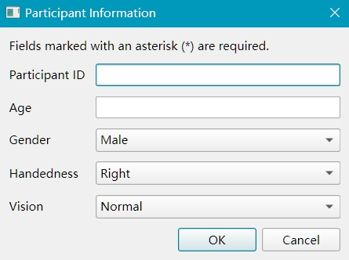
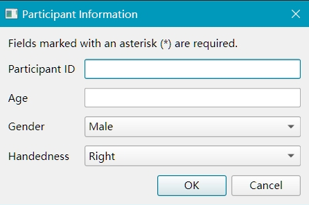
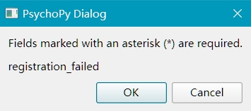
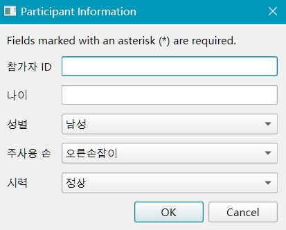

SubInfo: 收集被试信息¶
概述¶
SubInfo 类提供了一种灵活且用户友好的方式，在实验开始时收集被试信息。它创建了标准化的 GUI 对话框，可以通过配置文件进行自定义，支持多种字段类型和国际研究的本地化。
SubInfo 解决了被试注册中的几个常见挑战：
标准化：在不同实验中创建一致的被试信息表单
验证：根据字段约束自动验证输入
本地化：以被试的语言显示表单
配置：使用 YAML 或字典定义表单，便于修改
集成：与其他 psyflow 组件无缝连接
主要功能¶
功能 |
描述 |
|---|---|
多种字段类型 |
支持字符串、整数和选择（下拉）字段 |
输入验证 |
强制执行最小/最大值和数字长度等约束 |
本地化 |
以任何语言显示字段标签和消息 |
YAML 配置 |
使用人类可读的配置文件定义表单 |
自动默认值 |
如果未指定，则添加 subject_id 等标准字段 |
错误处理 |
为无效输入提供清晰的错误消息 |
快速参考¶
目的 |
方法 |
示例 |
|---|---|---|
初始化 |
|
|
收集信息 |
|
|
访问数据 |
|
|
验证输入 |
|
|
详细使用指南¶
1. 配置表单和收集信息¶
选项 A：使用 YAML 配置¶
YAML 提供了一种清晰、可读的方式来定义您的表单结构：
# subinfo_config.yaml
subinfo_fields:
- name: subject_id
type: int
constraints:
min: 101
max: 999
digits: 3
- name: age
type: int
constraints:
min: 18
max: 100
- name: gender
type: choice
choices: [Male, Female, Non-binary, Prefer not to say]
- name: handedness
type: choice
choices: [Right, Left, Ambidextrous]
- name: vision
type: choice
choices: [Normal, Corrected-to-normal, Impaired]
# 可选的本地化映射
subinfo_mapping:
subject_id: "Participant ID"
age: "Age"
gender: "Gender"
handedness: "Handedness"
vision: "Vision"
Male: "Male"
Female: "Female"
Non-binary: "Non-binary"
Prefer not to say: "Prefer not to say"
Right: "Right"
Left: "Left"
Ambidextrous: "Ambidextrous"
Normal: "Normal"
Corrected-to-normal: "Corrected-to-normal"
Impaired: "Impaired"
registration_successful: "Registration successful!"
registration_failed: "Registration cancelled."
invalid_input: "Invalid input for {field}"
定义配置后，收集信息就很简单了：
from psyflow import SubInfo
import yaml
# 从 YAML 加载配置
with open("subinfo_config.yaml", "r", encoding='utf-8') as f:
config = yaml.safe_load(f)
# 创建 SubInfo 实例
subinfo = SubInfo(config)
# 显示对话框并收集信息
subject_data = subinfo.collect()

Note
打开 YAML 文件时，请确保使用 encoding='utf-8' 以支持本地化中的非 ASCII 字符。
选项 B：使用 Python 字典¶
您也可以直接在 Python 中定义表单：
config = {
"subinfo_fields": [
{
"name": "subject_id",
"type": "int",
"constraints": {"min": 101, "max": 999, "digits": 3}
},
{
"name": "age",
"type": "int",
"constraints": {"min": 18, "max": 100}
},
{
"name": "gender",
"type": "choice",
"choices": ["Male", "Female", "Non-binary", "Prefer not to say"]
},
{
"name": "handedness",
"type": "choice",
"choices": ["Right", "Left", "Ambidextrous"]
}
],
"subinfo_mapping": {
"subject_id": "Participant ID",
"age": "Age",
"gender": "Gender",
"handedness": "Handedness"
# 根据需要添加更多映射
}
}
定义配置后，收集信息就很简单了：
from psyflow import SubInfo
subinfo = SubInfo(config)
# 显示对话框并收集信息
subject_data = subinfo.collect()

如果注册（收集）失败，实验将退出，Python 环境将关闭。

2. 字段类型和约束¶
SubInfo 支持三种字段类型：
字符串字段¶
- name: subject_name
type: string
字符串字段接受任何文本输入，无需验证。
整数字段¶
- name: subject_id
type: int
constraints:
min: 101 # 允许的最小值
max: 999 # 允许的最大值
digits: 3 # 所需的数字位数
整数字段验证：
输入可以转换为整数
值在最小/最大范围内（如果指定）
数字具有指定的确切位数（如果指定）
选择字段（下拉菜单）¶
- name: condition
type: choice
choices: [Control, Experimental]
选择字段提供一个包含指定选项的下拉菜单。
3. 本地化¶
对于国际研究，您可以通过在 subinfo_mapping 部分提供翻译来本地化表单：
# subinfo_config.yaml 本地化示例
subinfo_mapping:
subject_id: "참가자 ID"
age: "나이"
gender: "성별"
handedness: "주사용 손"
vision: "시력"
Male: "남성"
Female: "여성"
Non-binary: "논바이너리"
Prefer not to say: "응답하지 않음"
Right: "오른손잡이"
Left: "왼손잡이"
Ambidextrous: "양손잡이"
Normal: "정상"
Corrected-to-normal: "교정된 정상"
Impaired: "손상된"
registration_successful: "등록 성공!"
registration_failed: "등록이 취소되었습니다."
invalid_input: "{field}에 대한 잘못된 입력입니다."
from psyflow import SubInfo
import yaml
# 从 YAML 加载配置
with open("subinfo_config.yaml", "r", encoding='utf-8') as f:
config = yaml.safe_load(f)
# 创建 SubInfo 实例
subinfo = SubInfo(config)
# 显示对话框并收集信息
subject_data = subinfo.collect()

采用相同的方法，您可以通过在 subinfo_mapping 部分提供适当的翻译来为任何语言进行本地化。

Tip
除了使用 LLM 模型的聊天框进行翻译外，
psyflow 还内置了一个函数（translate_config()），使用 LLM API 翻译 subinfo 映射。
如果使用 LLM 生成翻译，请确保翻译准确。如果可能，请咨询母语人士。
4. 将被试信息添加到 TaskSettings¶
收集后，需要将被试信息传递给 TaskSettings 以完成实验配置。然后，该信息将通过 TaskSettings 与其他任务参数一起自动保存。
from psyflow import SubInfo, TaskSettings, load_config
# 1. 加载配置
cfg = load_config()
# 2. 收集被试信息
subform = SubInfo(cfg['subform_config'])
subject_data = subform.collect()
# 3. 加载任务设置
settings = TaskSettings.from_dict(cfg['task_config'])
settings.add_subinfo(subject_data)
Tip
load_config() 是一个方便的函数，用于加载存储在默认 TAPS 格式的 config/config.yaml 中的配置。
后续步骤¶
现在您已经了解了如何使用 SubInfo，您可以：
了解 TaskSettings 以配置您的实验
探索 StimBank 以管理刺激
查看 BlockUnit 以将试验组织成块
查看 StimUnit 以创建单个试验